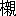

第十二の夫人は語る。
「今晩は主人が出ましてお話をいたす筈でございましたが、よんどころない用事が出来まして、残念ながら俄かに欠席いたすことになりました。就きましては、お前が
名代に出て何かのお話を申し上げろということでございましたが、無学のわたくしが皆さま方の前へ出て何も申し上げるようなことはございません。唯ほんの申し訳ばかりに、どなたも御存じの『剪燈新話』のお話を少々申し上げて御免を蒙ります。
わたくしどもにはよく
判りませんが、支那の小説は大体に於いて、
唐と
清とが一番よろしく、次が
宋で、
明朝の作は余り面白くないのだとか申すことでございます。殊に今晩の御趣意を
承わりまして、主人もお話の選択によほど苦しんでいたようでございました。しかし支那の本国ではともかくも、日本では昔から『剪燈新話』がよく知られて居りまして、これは御承知の通り、
明の
瞿宗吉の作ということになって居ります。その作者に就いては多少の異論もあるようでございますが、ここでは普通一般の説にしたがって、やはり瞿宗吉の作といたして置きましょう。
今まで皆さんがお話しになったものとは違いまして、この『剪燈新話』は一つのお話が比較的に長うございますから、今晩はそのうちの『
申陽洞記』と『
牡丹燈記』の二種を選んで申し上げることにいたします。
馬琴の『八犬伝』のうちに、
犬飼現八が
庚申山で山猫の妖怪を射る
件がありますが、それはこの『申陽洞記』をそっくり書き直したものでございます。一方の『牡丹燈記』が
浅井了意の『お
伽ぼうこ』や、
円朝の『牡丹燈籠』に取り入れられているのは、どなたも
能く御存じのことでございましょう。前置きは先ずこのくらいにいたしまして、すぐに
本文に取りかかります」
申陽洞記
隴西の
李徳逢という男は当年二十五歳の青年で、馬に
騎り、弓をひくことが上手で、大胆な勇者として知られていましたが、こういう人物の癖として家業にはちっとも頓着せず、常に弓矢を取って乗りまわっているので、土地の者には
爪弾きされていました。
そういうわけで、
身代もだんだんに衰えて来ましたので、
元の
天暦年間、李は自分の郷里を立ち
退いて、桂州へ行きました。そこには自分の父の旧い友達が監郡の役を勤めているので、李はそれを頼って行ったのですが、さて行き着いてみると、その人はもう死んでしまったというので、李も途方に暮れました。さりとて再び郷里へも帰られず、そこらをさまよい歩いた末に、この国には名ある山々が多いのを幸いに、その山々のあいだを往来して、自分が得意の弓矢をもって鳥や
獣を射るのを商売にしていました。
「自分の好きなことをして世を送っていれば、それで結構だ」
こう思って、彼は平気で毎日かけ廻っていました。すると、ここに
銭という
大家がありまして、その主人は銭翁と呼ばれ、この郡内では有名な資産家として知られていました。銭の家には今年十七のひとり娘がありまして、父の寵愛はひと通りでなく、子供のときから屋敷の奥ふかく住まわせて、親戚や近所の者にも
滅多にその姿を窺わせたことがないくらいでした。その最愛の娘が雨風の暗い夜に突然ゆくえ不明になったので、さあ大変な騒ぎになりました。
よく調べてみると、門も扉も窓も元のままになっていて、外から何者かが忍び込んだらしい形跡もなく、娘だけがどこへか消えてしまったのですから、実に不思議です。勿論、早速にその筋へ訴え出るやら、神に
祷るやら、四方八方をたずね廻らせるやら、手に手を尽くして詮議したのですが、遂にそのゆくえが判らないので、父の銭翁は昼夜悲嘆にくれた末に、こういうことを触れ出しました。
「もし娘のありかを尋ね出してくれた者には、わたしの身代の半分を
割いてやる。又その上に娘の婿にする」
それを聞いて、誰も彼も色と慾とのふた筋から、一生懸命に心あたりを探し廻ったのですが、娘のゆくえは容易にわからず、むなしく三年の月日を送ってしまいました。すると、ある日のことです。かの李徳逢が例のごとくに弓矢をたずさえて山狩りに出ると、一匹の

を見つけたので、すぐに追って行きました。
はよく走るので、なかなか追い付きません。鹿を追う猟師は山を見ずの
譬の通りに、李は夢中になって追って行くうちに、岡を越え、峰を越えて、深い谷間へ入り込みましたが、遂に
獲物のすがたを見失いました。がっかりして見まわすと、いつの間にか日が暮れています。おどろいて引っ返そうとすると、もと来た道がもう判りません。そこらを無暗に迷いあるいているうちに、夜はだんだんに暗くなって、やがて
初更（午後七時―九時）に近い頃になったらしいのです。むこうの山の頂きに何かの建物があるのを見つけて、ともかくもそこまで
辿り着くと、そこらは
人跡の絶えたところで、いつの代に建てたか判らないような、
頽れかかった
一宇の古い廟がありました。
「なんだか物凄い所だ」
大胆の青年もさすがに一種の恐れを感じましたが、今更どうすることも出来ないので、しばらく軒下に休息して夜のあけるのを待つことにしていると、たちまちに道を払う
警蹕の声が遠くきこえました。
「こんな山奥へ今ごろ
威めしい行列を作って何者が来るのか。鬼神か、盗賊か」
忍んで様子を窺うに
如ずと思って、かれは廟の
欄間へ
攀じのぼり、
梁のあいだに身をひそめていると、やがてその一行は門内へ進んで来ました。二つの紅い燈籠をさきに立てて、その
頭分とみえる者は
紅い
冠をいただき、うす黄色の
袍を着て、神坐の前にある
案に拠って着坐すると、その従者とおぼしきもの十余人はおのおの武器を執って、
階段の下に居列びました。その
行粧はすこぶる厳粛でありますが、よく見ると、かれらの顔かたちはみな蒼黒く、猿のたぐいの
※［＃「けものへん＋矍」、261-18］というものでありました。
さては妖怪
変化かと、李は腰に挟んでいる
箭を取って、まずその頭分とみえる者に射あてると、彼はその
臂を傷つけられて、おどろき叫んで逃げ出しました。他の
眷族どもも狼狽して、皆ばらばらと逃げ去ってしまったので、あとは元のようにひっそりと鎮まりました。夜が明けてから神坐のあたりを調べると、なま血のあとが点々として正門の外までしたたっているので、李はその跡をたずねて、山を南に五里ほども分け入ると、そこに一つの大きい穴があって、血のあとはその穴の入口まで続いていました。
「化け物の巣窟はここだな。どうしてくりょう」
李は穴のあたりを見まわって、かれらを退治する工夫を講じているうちに、やわらかい草に足をすべらせて、
あっという間に穴の底へころげ落ちました。穴の深さは何十丈だか判りません。仰いでも空は見えないくらいです。
所詮ふたたびこの世へは出られないものと覚悟しながら、李は暗いなかを探りつつ進んでゆくと、やがて明るいところへ出ました。そこには
石室があって、
申陽之洞という
榜が立っています。その門を守るもの数人、いずれも昨夜の妖怪どもで、李のすがたを見てみな驚いたように
訊きました。
「あなたは一体何者で、どうしてここへ来たのです」
李は腰をかがめて丁寧に敬礼しました。
「わたくしは城中に住んで、医者を業としている者でございますが、今日この山へ薬草を採りにまいりまして、思わず足をすべらせてこの穴へ転げ落ちたのでございます」
それを聞いて、かれらは俄かに喜びの色をみせました。
「おまえは医者というからは、人の療治が出来るのだろうな」
「勿論、それがわたくしの商売でございます」
「いや、有難い」と、かれらはいよいよ喜びました。「実はおれたちの主君の申陽侯が昨夜遊びに出て、ながれ矢のために負傷なされた。そこへ丁度、お前のような医者が迷って来るというのは、天の助けだ」
かれらは奥へかけ込んで報告すると、李はやがて奥へ案内されました。奥の寝室は
帷も
衾も華麗をきわめたもので、一匹の年ふる大猿が石の
榻の上に横たわりながら
唸っていると、そのそばには
国色ともいうべき美女三人が控えています。李はその猿の脈を取り、傷をあらためて、まことしやかにこう言いました。
「御心配なさるな。すぐに療治をしてあげます。わたくしは一種の仙薬をたくわえて居りますから、それをお飲みになれば、こんな傷はたちまちに癒るばかりでなく、幾千万年でも長生きが出来るのです」
腰に着けている
嚢から一薬をとり出して
勿体らしく与えると、他の妖怪どもも皆その前にひざまずいて頼みました。
「あなたは実に神のようなお人です。その長生きの仙薬というのをどうぞ我々にもお恵みください」
「よろしい。おまえらにも分けてあげよう」
李は嚢にあらん限りの薬をかれらにも施すと、いずれも奪い合って飲みましたが、それは怖ろしい毒薬で、怪鳥や猛獣を
仆すために
矢鏃に塗るものでありました。その毒薬を飲んだのですから堪まりません。かの大猿をはじめとして、他の妖怪どもも片端から枕をならべてばたばたと倒れてしまいました。仕済ましたりとあざわらいながら、李は壁にかけてある宝剣をとって、大猿小猿あわせて三十六匹の首をことごとく斬り落しました。
残る三人の美女も妖怪のたぐいであろうと疑って、李はそれをも殺そうとすると、みな泣いて訴えました。
「わたくしどもは決して怪しい者ではございません。不幸にして妖怪に奪い去られ、悲しい怖ろしい地獄の底に沈んでいたのでございます。その妖怪を残らず亡ぼして下さいましたのですから、わたくしどもに取りましてあなたは命の親の大恩人でございます」
そこで、だんだん聞いてみると、その一人はかの銭翁の娘で、他のふたりもやはり近所の良家の娘たちと判りました。李はこうして妖怪を退治して、不幸の娘たちを救ったのですが、何分にも深い穴の底に落ちているのですから、三人を連れて出る
術がありません。これには李も思案にくれているところへ、いずこよりとも知らず、幾人の老人があらわれて来ました。いずれも
鬢の毛を長く垂れて、尖った口を持った人びとで、ひとりの白衣の老人を先に立てて、李の前にうやうやしく礼拝しました。
「われわれは
虚星の精で、久しくここに住んで居りましたが、近ごろかの妖怪らのために多年の住み家を占領されてしまいました。しかも我々はそれに敵対するほどの力がないので、しばらくここを立ち退いて時節の来るのを待っていたのでございますが、今日あなたのお力によって、かれらがことごとく亡びましたので、こんな悦ばしいことはございません」
老人らはその謝礼として、めいめいの袖の下から、金や
珠のたぐいを取出して
献げました。
「おまえらもすでに
神通力を
具えているらしいのに、なぜかの妖怪どもに今まで屈伏していたのだ」と、李は訊きました。
「わたくしはまだ五百年にしかなりません」と、白衣の老人は答えました。「かの大猿はすでに八百年の
劫を経て居ります。それで、残念ながら彼に敵することが出来なかったのでございます。しかし我々は人間に対して決して禍いをなすものではございません。かの兇悪な猿どもがたちまち滅亡したのは、あなたのお力とは申しながら、
畢竟は天罰でございます」
「ここを申陽洞と名づけたのは、どういうわけだ」と、李はまた訊きました。
「猿は
申に属します。それで、かれらが勝手にそんな名を付けたので、もとからの地名ではございません」
「おまえらがここへ帰り住むようになったらば、おれに出口を教えてくれ、
礼物などは貰うに及ばない。ただこの娘たちを救って出られればいいのだ」
「それはたやすいことでございます。半時のあいだ眼を閉じておいでなされば、自然にお望みが遂げられます」
李はその通りにしていると、耳のはたには激しい雨風の声がしばらく聞えるようでしたが、やがてその声がやんだので眼を開くと、一匹の大きい白鼠がさきに立って、
豕のような五、六匹の鼠がそのあとに従っていました。そこには一つの穴が掘られていて、それから明るい路へ出られるようになっているので、李は三人の娘と共に再びこの世の風に吹かれることになりました。
それからすぐに銭翁の家をたずねて、かのむすめを引き渡すと、翁はおどろき喜んで、かねて触れ出した通りに李を婿にしました。他の二人の娘の家でも、おなじくその娘を贈ることにしたので、李は一度に三人の美女を
娶った上に、あっぱれの
大福長者になりました。その後ふたたびかの場所へ行ってみると、そこらには草木が一面におい茂っているばかりで、むかしの跡をたずねる
便宜もありませんでした。
牡丹燈記
元の末には天下大いに乱れて、一時は群雄割拠の時代を現じましたが、そのうちで
方谷孫というのは
浙東の地方を占領していました。そうして、毎年正月十五日から五日のあいだは、明州府の城内に
元宵の燈籠をかけつらねて、諸人に見物を許すことにしていたので、その
宵々の賑わいはひと通りでありませんでした。
元の
至正二十年の正月のことでございます。
鎮明嶺の
下に住んでいる
喬生という男は、年がまだ若いのに先頃その妻をうしなって、男やもめの心さびしく、この元宵の夜にも燈籠見物に出る気もなく、わが家の
門にたたずんで、むなしく往来の人びとを見送っているばかりでした。十五日の夜も
三更（午後十一時―午前一時）を過ぎて、往来の人影も次第に稀になった頃、髪を
両輪に結んだ召仕い風の小女が双頭の牡丹燈をかかげて先に立ち、ひとりの女を案内して来ました。女は年のころ十七、八で、
翠い袖、
紅い
裙の
衣を着て、いかにもしなやかな姿で西をさして
徐かに行き過ぎました。
喬生は月のひかりで窺うと、女はまことに
国色ともいうべき美人であるので、我にもあらず浮かれ出して、そのあとを追ってゆくと、女もやがてそれを
覚ったらしく、振り返ってほほえみました。
「別にお約束をしたわけでもないのに、ここでお目にかかるとは……。何かのご縁でございましょうね」
それをしおに、喬生は走り寄って丁寧に敬礼しました。
「わたくしの住居はすぐそこです。ちょっとお立ち寄り下さいますまいか」
女は別に
拒む色もなく、かの小女をよび返して、喬生の
家へ戻って来ました。初対面ながら甚だ打ち解けて、女は自分の身の上を明かしました。
「わたくしの姓は
符、
字は
麗卿、名は
淑芳と申しました。かつて
奉化州の
判を勤めて居りました者の娘でございますが、父は先年この世を去りまして、家も次第に衰え、ほかに兄弟もなく、
親戚もすくないので、この
金蓮とただふたりで
月湖の西に仮住居をいたして居ります」
今夜は泊まってゆけと勧めると、女はそれをも拒まないで、遂にその一夜を喬生の家に明かすことになりました。それらの事は
委しく申し上げません。原文には「甚だ歓愛を
極む」と書いてございます。夜のあける頃、女はいったん別れて去りましたが、日が暮れるとまた来ました。
金蓮という召仕いの小女がいつも牡丹燈をかかげて案内して来るのでございます。
こういうことが半月ほども続くうちに、喬生のとなりに住む老人が少しく疑いを起しまして、境いの壁に小さい穴をあけてそっと覗いてみると、
紅や
白粉を塗った一つの骸骨が喬生と並んで、ともしびの
下に睦まじそうにささやいているのです。それをみて老人はびっくりして、翌朝すぐに喬生を詮議すると、喬生も最初は堅く秘して言わなかったのですが、老人に
嚇されてさすがに薄気味悪くなったと見えて、いっさいの秘密を残らず白状に及びました。
「それでは念のために調べて見なさい」と、老人は注意しました。「あの女たちが月湖の西に住んでいるというならば、そこへ行ってみれば正体がわかるだろう」
なるほどそうだと思って、喬生は早速に月湖の西へたずねて行って、長い
堤の上、高い橋のあたりを隈なく探し歩きましたが、それらしい住み家は見当りません。土地の者にも訊き、往来の人にも尋ねましたが、誰も知らないという。そのうちに日も暮れかかって来たので、そこにある
湖心寺という古寺にはいって暫く休むことにしました。そうして、東の廊下をあるき、さらに西の廊下をさまよっていると、その西廊のはずれに薄暗い
室があって、そこに一つの
旅が置いてありました。旅というのは、旅先で死んだ人を棺に
蔵めたままで、どこかの寺中にあずけて置いて、ある時機を待って故郷へ持ち帰って、初めて本当の葬式をするのでございます。したがって、この旅に就いては昔からいろいろの怪談が伝えられています。
喬生は何ごころなくその旅をみると、その上に白い紙が貼ってあって「
故奉化符州判女、
麗卿之柩」としるし、その柩の前には見おぼえのある双頭の牡丹燈をかけ、又その燈下には人形の
侍女が立っていて、人形の背中には金蓮の二字が書いてありました。それを見ると、喬生は俄かに
ぞっとして、あわててそこを逃げ出して、あとをも見ずに我が家へ帰って来ましたが、今夜もまた来るかと思うと、とても落ちついてはいられないので、その夜は隣りの老人の家へ泊めてもらって、
顫えながらに一夜をあかしました。
「ただ怖れていても仕方がない」と、老人はまた教えました。「
玄妙観の
魏法師は
故の開府の
王真人のお弟子で、おまじないでは当今第一ということであるから、お前も早く行って頼むがよかろう」
その明くる朝、喬生はすぐに玄妙観へたずねてゆくと、法師はその顔をひと目みて驚いた様子でした。
「おまえの顔には妖気が満ちている。一体ここへ何しに来たのだ」
喬生はその坐下に拝して、かの牡丹燈の一条を訴えると、法師は二枚の
朱いお
符をくれて、その一枚は
門に貼れ、他の一枚は寝台に貼れ。そうして、今後ふたたび湖心寺のあたりへ近寄るなと言い聞かせました。
家へ帰って、その通りにお符を貼って置くと、果たしてその後は牡丹燈のかげも見えなくなりました。それからひと月あまりの後、喬生は
袞繍橋のほとりに住む友達の家をたずねて、そこで酒を飲んで帰る途中、酔ったまぎれに魏法師の戒めを忘れて、湖心寺のまえを通りかかると、寺の門前にはかの金蓮が立っていました。
「お嬢さまが久しく待っておいでになります。あなたもずいぶん薄情なかたでございますね」
否応いわさずに彼を寺中へ引き入れて、西廊の薄暗い一室へ連れ込むと、そこには麗卿が待ち受けていて、これも男の無情を責めました。
「あなたとわたくしは
素からの知合いというのではなく、途中でふと行き逢ったばかりですが、あなたの厚い心に感じて、遂にわたくしの身を許して、毎晩かかさずに通いつめ、出来るかぎりの真実を
竭して居りましたのに、あなたは怪しい
偽道士のいうことを
真に受けて、にわかにわたくしを疑って、これぎりに縁を切ろうとなさるとは、余りに薄情ななされかたで、わたくしは深くあなたを怨んで居ります。こうして再びお目にかかったからは、あなたをこのままに帰すことはなりません」
女は男の手を握って、
柩の前へゆくかと思うと、柩の
蓋はおのずと開いて、二人のすがたはたちまち隠れました。蓋は元のとおりに閉じられて、喬生は柩のなかで死んでしまったのです。
となりの老人は喬生の帰らないのを怪しんで、
遠近をたずね廻った末に、もしやと思って湖心寺へ来てみると、見おぼえのある喬生の着物の裾がかの柩の外に少しくあらわれているので、いよいよ驚いてその次第を寺の僧に訴え、早速にかの柩をあけてあらためると、喬生は女の
亡骸と折り重なって死んでいました。女の顔はさながら生けるが如くに見えるのです。寺の僧は嘆息して言いました。
「これは奉化州判の符という人の娘です。十七歳のときに死んだので、仮りにその遺骸をここに預けたままで、一家は北の方へ赴きましたが、その後なんのたよりもありません。それが十二年後のこんにちに至って、そんな不思議を見せようとは、まことに思いも寄らないことでした」
なにしろそのままにしては置かれないというので、男と女の死骸を
蔵めたままで、その柩を寺の西門の外に埋めました。ところが、その後にまた一つの怪異が生じたのでございます。
陰った日や暗い夜に、かの喬生と麗卿とが手をひかれ、一人の小女が牡丹燈をかかげて先に立ってゆくのをしばしば見ることがありまして、それに出逢ったものは重い病気にかかって、
悪寒がする、熱が出るという始末。かれらの墓にむかって法事を営み、肉と酒とを供えて祭ればよし、さもなければ命を
亡うことにもなるので、土地の人びとは大いに
懼れ、争ってかの玄妙観へかけつけて、なんとかそれを取り鎮めてくれるように嘆願すると、魏法師は言いました。
「わたしのまじないは未然に防ぐにとどまる。もうこうなっては、わたしの力の及ぶ限りでない。聞くところによると、
四明山の頂上に
鉄冠道人という人があって、鬼神を鎮める法術を
能くするというから、それを尋ねて頼んでみるがよかろうと思う」
そこで、大勢は誘いあわせて四明山へ登ることになりました。
藤葛を
攀じ、
渓を越えて、ようやく絶頂まで辿りつくと、果たしてそこに一つの草庵があって、道人は
几に倚り、童子は鶴にたわむれていました。大勢は庵の前に拝して、その願意を申し述べると、道人はかしらをふって、わたしは山林の隠士で、
翌をも知れない老人である。そんな怪異を鎮めるような奇術を知ろう筈はない。おまえ方は何かの聞き違えで、わたしを買いかぶっているのであろうと言って、堅く断わりました。いや、聞き違えではない、玄妙観の魏法師の指図であると答えると、道人はさてはとうなずきました。
「わたしはもう六十年も山を下ったことがないのに、あいつが飛んだおしゃべりをしたので、又うき世へ引き出されるのか」
彼は童子を連れて下山して来ましたが、老人に似合わぬ足の軽さで、直ちに湖心寺の西門外にゆき着いて、そこに
方丈の壇をむすび、何かのお符を書いてそれを
焚くと、たちまちに符の使い五、六人、いずれも身のたけ一丈余にして、
黄巾をいただき、
金甲を着け、彫り物のある
戈をたずさえ、壇の下に突っ立って師の命令を待っていると、道人はおごそかに言い渡しました。
「この頃ここらに妖邪の祟りがあるのを、おまえ達も知らぬことはあるまい。早くここへ駆り出して来い」
かれらは承わって立ち去りましたが、やがて喬生と麗卿と金蓮の三人に
手枷首枷をかけて引っ立てて来て、さらに道人の指図にしたがい、
鞭や
笞でさんざんに打ちつづけたので、三人は惣身に血をながして苦しみ叫びました。
その
呵責が終った後に、道人は三人に筆と紙とをあたえて、服罪の
口供を書かせ、さらに大きな筆をとってみずからその判決文を書きました。
その文章は長いので、ここに略しますが、要するにかれら三人は世を惑わし、民を
誣い、条にたがい、法を犯した罪によって、かの牡丹燈を焚き捨てて、かれらを九泉の獄屋へ送るというのでありました。
急々如律令（悪魔払いの呪文）、もう寸刻の容赦はありません。この判決をうけた三人は、今さら嘆き悲しみながら、進まぬ足を追い立てられて、泣く泣くも地獄へ送られて行きました。それを見送って、道人はすぐに山へ帰ってしまいました。
あくる日、大勢がその礼を述べるために再び登山すると、ただ草庵が残っているばかりで、道人の姿はもう見えませんでした。さらに玄妙観をたずねて、そのゆくえを問いただそうとすると、魏法師はいつか唖になって、口をきくことが出来なくなっていました。